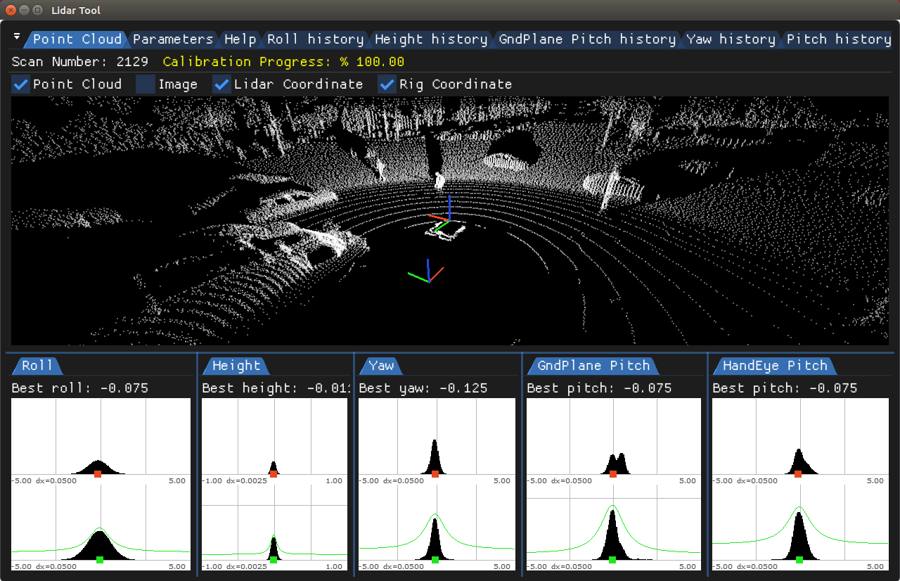
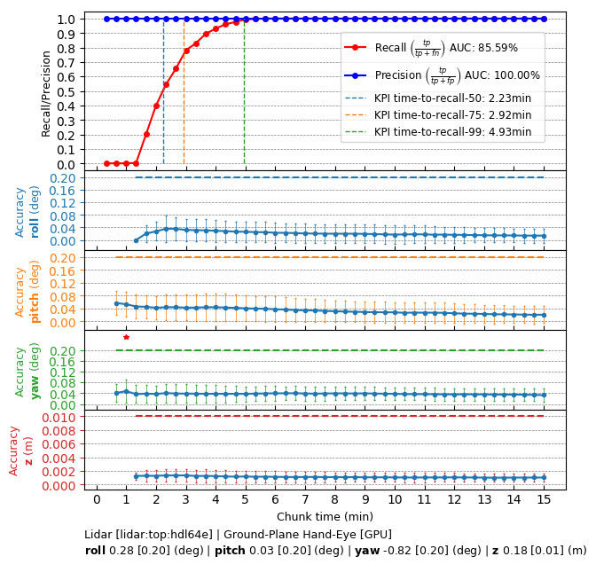

Lidar Calibration - Operating Principle
Lidar calibration estimates the current sensor orientation (roll, pitch, yaw) and height with respect to the vehicle coordinate frame. Roll, pitch and height are estimated via fitting a ground plane near the vehicle. Yaw and pitch are estimated via aligning the vehicle egomotion with the Lidar sensor motion in the same time interval. Calibration will stop once the vehicle drives in a speed lower than 5 km/h. It will resume once the vehicle drives faster than that speed limit. Current estimation targets at multi-beam 360 degree rotational Lidar sensors, i.e. Velodyne-HDL32E and Velodyne-HDL64E.
Lidar Roll/Pitch/Yaw/Height
Current roll/pitch/height estimation is not suitable for Lidar sensor with low density and narrow horizontal field-of-view, i.e. Velodyne-VLP16 and IBEO-LUX4. The estimation inputs a full Lidar sweep and expects sufficient cloud of points in the vehicle vicinity. Such Region-Of-Interest (rectangular ROI) is defined by the vehicle physical specifications and nominal sensor calibration. In the ROI, the method selects 3D Lidar points whose heights are within a certain threshold for ground plane fitting and optimization. The estimated ground plane normal vector is used to compute the roll and pitch corrections with respect to the nominal sensor coordinate frame. The ground plane's distance to the sensor coordinate origin defines the actual height.
Yaw can not be determined by ground plane fitting. It requires extra information such as vehicle presents circular trajectory while driving. Hand-eye optimization aligns vehicle relative pose with Lidar point cloud relative poses between two timestamps. The optimization outputs yaw/pitch angles. Those estimates (roll/pitch/height and yaw/pitch) are inserted into robust estimation histograms over time. After the estimates are accepted, their modes define the best estimations. Pitch is considered to be accepted only if the two pitch estimates (hand-eye and ground-plane-based) agree with each other within small threshold (see histograms below).

Roll/Pitch/Yaw/Height estimation histograms (bottom), collected over a period of time
Requirements
Initialization Requirements
- Nominal values on Lidar calibration
- Orientation(roll/pitch/yaw): less than 10 degree error
- Position(x/y/z): x and y are not used for now, z is less than 10 cm error
- Vehicle physical dimenstions: wheel base, vehicle width and length
Runtime Calibration Dependencies
- If using IMU-based egomotion in the pose-based API, then egomotion needs to be based on accurate IMU calibration
Input Requirements
- Assumption: Vehicle performs the aforementioned maneuvers until calibration convergence.
- Vehicle egomotion: requirements can be found in the Egomotion module
- Sensors: in order to achieve good performance, Lidar calibration requires data from IMU, GPS, CAN sensors.
Output Requirements
- Corrected roll/pitch/yaw value: less than 0.3 degrees
- Corrected height value: less than 3 cm
- Time to correction: less than 10 minutes for Lidar sensor with 10HZ spinning frequency
Cross-validation KPI
Several hours of data are used to produce a reference calibration value for cross-validation. Then, short periods of data are evaluated for whether they can recover the same values. For example, the graph below shows precision/recall curves of Lidar self-calibration. Precision indicates that an accepted calibration is within a fixed precision threshold from the reference calibration, and recall indicates the ratio of accepted calibrations in the given amount of time.

Workflow
The following code snippet shows the general structure of a program that performs Lidar self-calibration
while (true)
{
dwICP_optimize(&lidarDeltaPose, ...)
}
DW_API_PUBLIC dwStatus dwCalibrationEngine_addLidarPose(const dwTransformation3f *deltaPoseLidarTimeAToTimeB, const dwTransformation3f *deltaPoseRigTimeAToTimeB, dwTime_t timestampA, dwTime_t timestampB, uint32_t sensorIndex, dwCalibrationEngineHandle_t engine)
Adds lidar delta-poses and ego-motion delta poses to the calibration engine.
DW_API_PUBLIC dwStatus dwCalibrationEngine_getCalibrationStatus(dwCalibrationStatus *status, dwCalibrationRoutineHandle_t routine, dwCalibrationEngineHandle_t engine)
Returns the current status of a calibration routine.
DW_API_PUBLIC dwStatus dwCalibrationEngine_initialize(dwCalibrationEngineHandle_t *engine, dwRigHandle_t rig, dwContextHandle_t context)
Creates and initializes a Calibration Engine.
DW_API_PUBLIC dwStatus dwCalibrationEngine_getSensorToRigTransformation(dwTransformation3f *sensorToRig, dwCalibrationRoutineHandle_t routine, dwCalibrationEngineHandle_t engine)
Returns the current sensor to rig transformation of a calibration routine estimating this transformat...
DW_API_PUBLIC dwStatus dwCalibrationEngine_startCalibration(dwCalibrationRoutineHandle_t routine, dwCalibrationEngineHandle_t engine)
Starts a calibration routine associated with a calibration engine.
DW_API_PUBLIC dwStatus dwCalibrationEngine_addLidarPointCloud(const dwVector4f *lidarPoints, uint32_t pointCount, dwTime_t timestamp, uint32_t sensorIndex, dwCalibrationEngineHandle_t engine)
Adds a lidar sweep to the calibration engine.
DW_API_PUBLIC dwStatus dwCalibrationEngine_stopCalibration(dwCalibrationRoutineHandle_t routine, dwCalibrationEngineHandle_t engine)
Stops a calibration routine associated with a calibration engine.
DW_API_PUBLIC dwStatus dwCalibrationEngine_initializeLidar(dwCalibrationRoutineHandle_t *routine, uint32_t lidarIndex, uint32_t canIndex, const dwCalibrationLidarParams *params, cudaStream_t stream, dwCalibrationEngineHandle_t engine)
Initializes a lidar calibration routine designated by the sensor provided to the method.
DW_API_PUBLIC dwStatus dwEgomotion_computeRelativeTransformation(dwTransformation3f *poseAtoB, dwEgomotionRelativeUncertainty *uncertainty, dwTime_t timestamp_a, dwTime_t timestamp_b, dwEgomotionConstHandle_t obj)
Computes the relative transformation between two timestamps and the uncertainty of this transform.
This workflow is demonstrated in the following sample: Lidar Calibration Sample